INDUSTRY INTERNSHIP
Airbus Canada · Mitacs
Engineering intern
Mechanical stress engineering support for A220 cabin systems and monument configurations.
Aerospace Engineer
At IISc Bengaluru, I performed mesh generation and computational fluid dynamics (CFD) analysis for a defence research project on aerodynamic technologies for unmanned aerial vehicles (UAVs). At ADE–DRDO, I validated CFD models against experimental data and co-authored a paper for the AeSI CFD Symposium. Building on that foundation in CFD and aerodynamics, my graduate work at McGill now focuses on aircraft structures and materials, with an emphasis on the mechanics of composite materials.
My undergraduate research team at the Aeronautical Development Establishment (ADE–DRDO), Bengaluru, studied an aircraft store separation problem through computational modelling and comparison with experimental data.
The team used MATLAB/Simulink and ANSYS Fluent to study the same engineering question from different modelling perspectives.
The report compared computational predictions with benchmark experimental data to assess how well the simulations represented the observed motion.
I co-authored the related AeSI CFD Symposium paper on Mosaic meshing and experimental validation in 2022.
Select a figure to open the gallery.
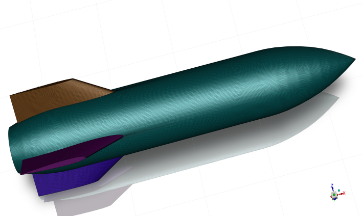
The oblique view shows the exterior body and tail surfaces of the standalone model.
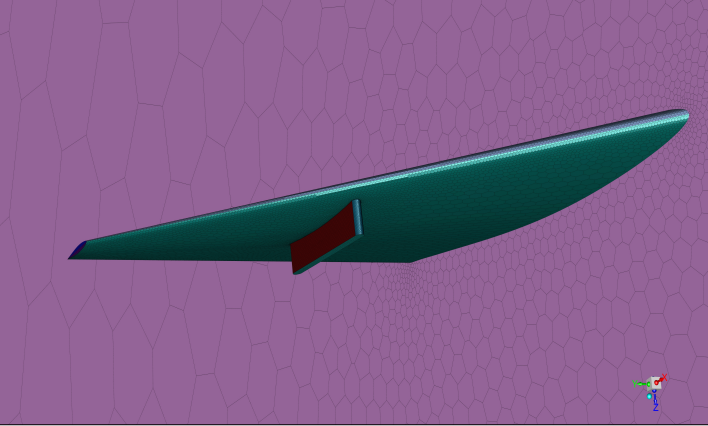
The wing and its underwing support appear as a separate model in the report.
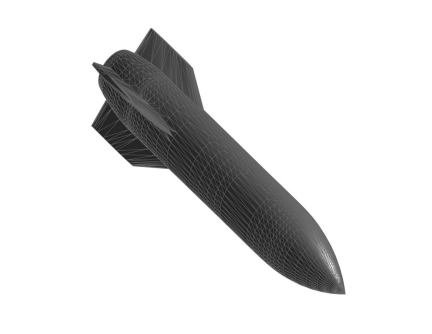
A single perspective view from the report’s visualization chapter.
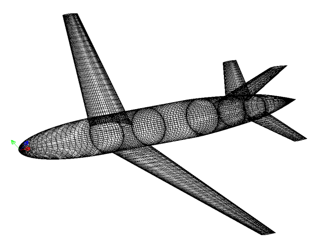
An appendix illustration showing how an aircraft’s curved surfaces can be represented as panels.
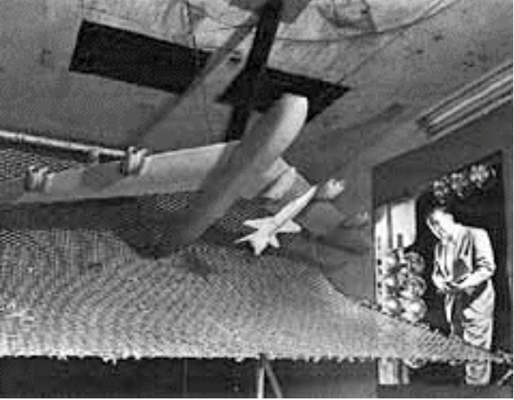
A historical photograph from the report’s introduction to experimental research.
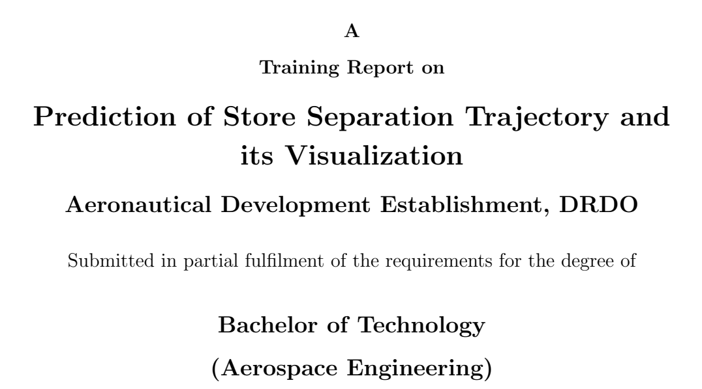
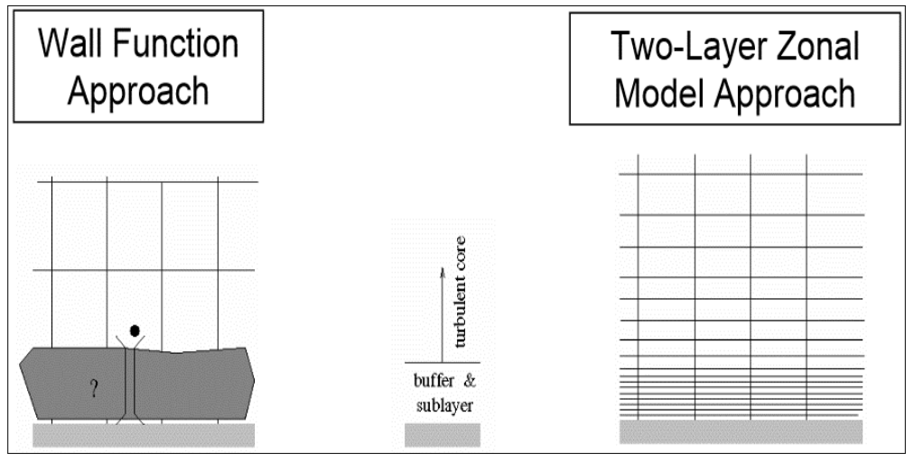
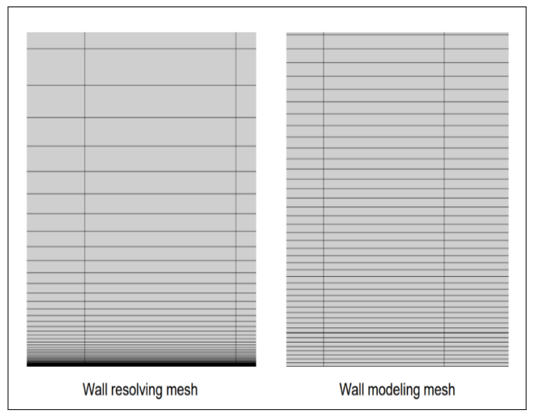
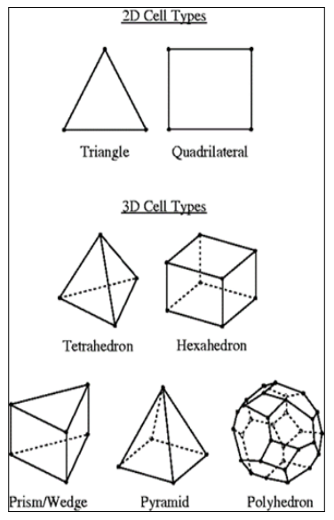
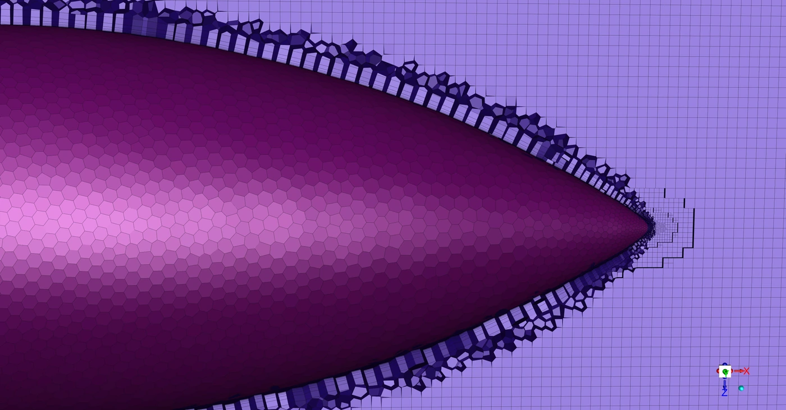
A cut-plane view shows the transition between the cells at the surface and the surrounding grid.
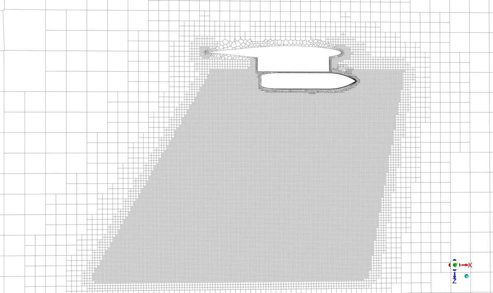
The side view makes the change in cell density across the domain visible.
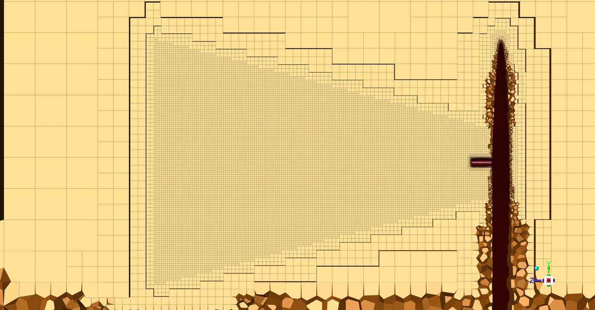
The front view shows the same type of grid refinement from another plane.
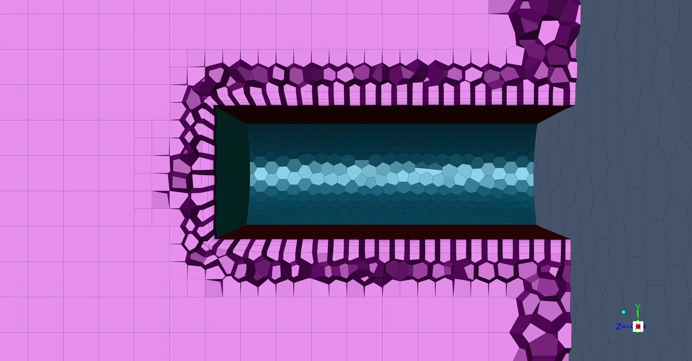
The cross-section shows finer cells near the pylon and coarser cells farther away.
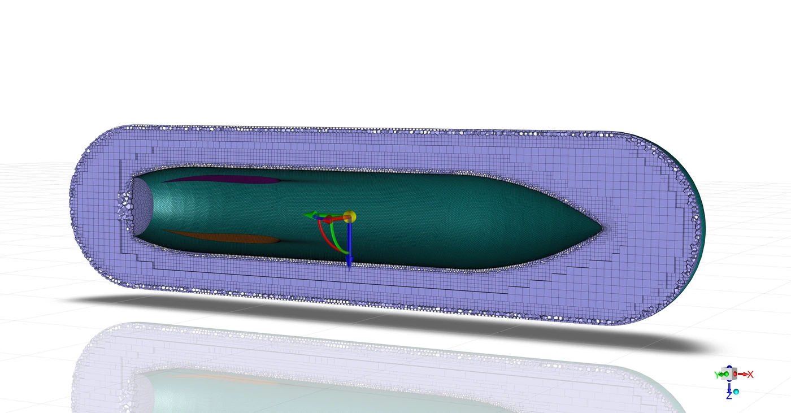
The Y-plane view shows how the component sits inside its surrounding mesh.
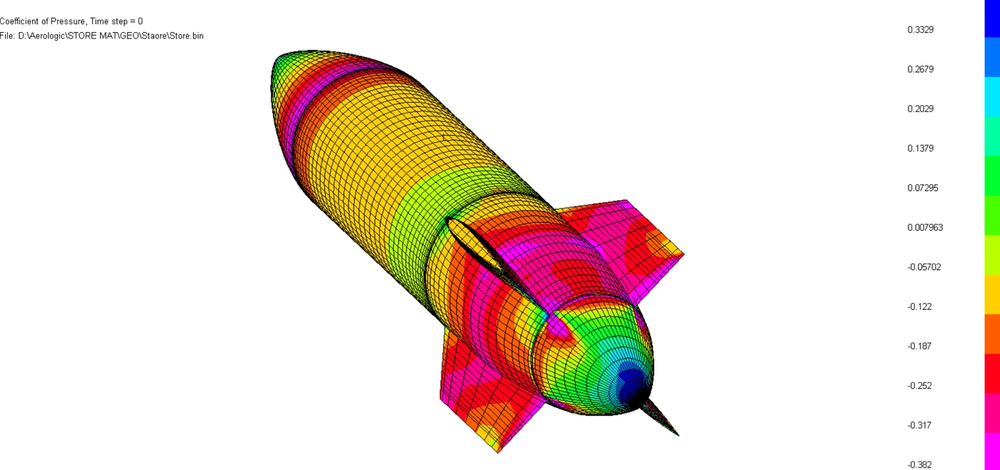
The color bands show how the pressure coefficient varies across the body and fins at zero angle of attack.
INDUSTRY INTERNSHIP
Engineering intern
Mechanical stress engineering support for A220 cabin systems and monument configurations.
2022–2023
Project Assistant (Engineer)
Prepared computational geometry and meshes in ICEM CFD, configured HiFUN simulations, and ran jobs on the Param Pravega HPC cluster. Contributed to work on a flush air data system.
2021–2022
Project and research intern
Worked on a team research project involving MATLAB/Simulink, ANSYS Fluent and experimental validation. The work led to a co-authored contribution at the Aeronautical Society of India CFD symposium. LPU final report case study
GRADUATE STUDIES
MEng in Aerospace Engineering
Specialization in Structures & Materials, with project work in airframe analysis, flight performance, orbital mechanics and optical systems.
2018–2022
B.Tech in Aerospace Engineering
Completed undergraduate engineering work in aerodynamics, flight mechanics and computational modelling.
I’m open to aerospace engineering roles in aircraft structures, composite materials, and computational aerodynamics. If you’re hiring, I’d be glad to hear from you.